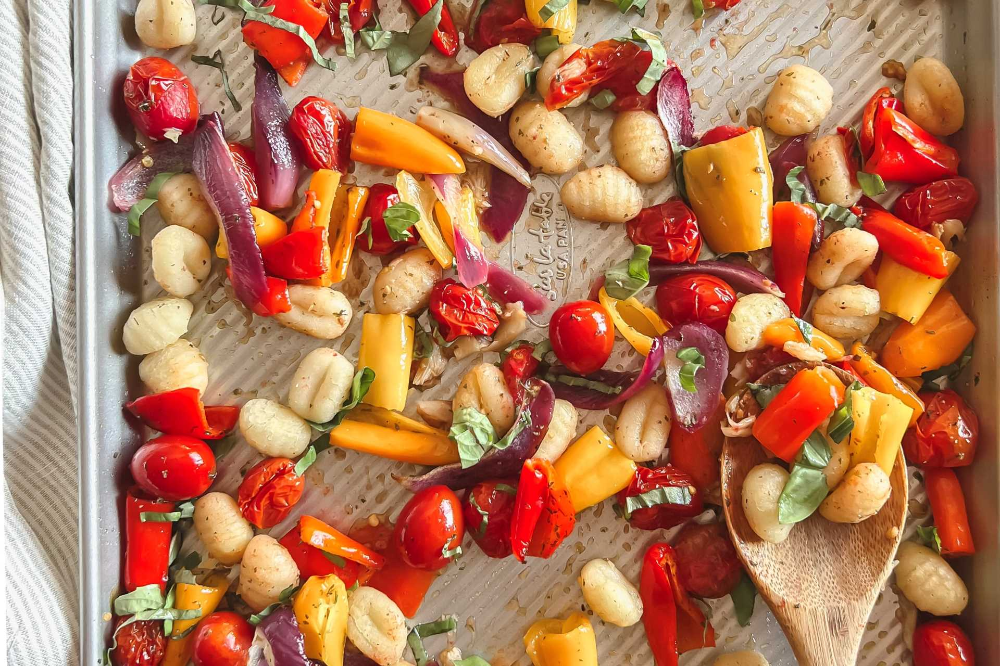
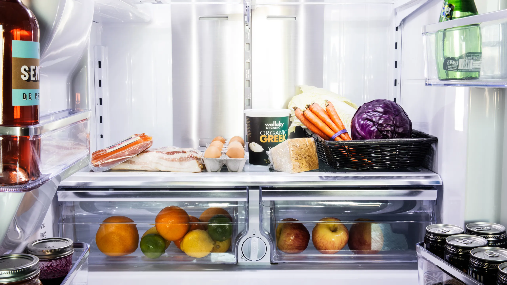
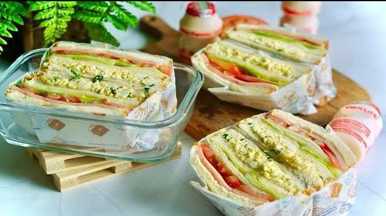
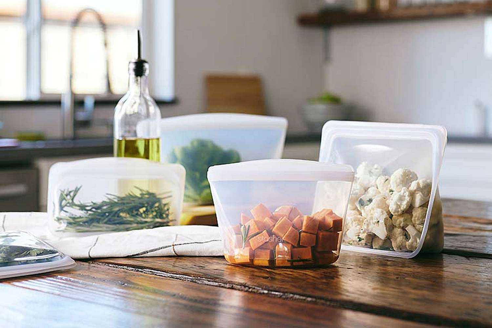

Overview: keep it easy
- Think in building blocks: protein + carb + veg + sauce.
- Cook once, cool fast, portion into 3–4 boxes; label with day and date.
- Use what you already know from Student Budget Meals and Quick Healthy Meals.
- Bring a reusable container; most campuses have microwaves in the student centre or library.
30-Minute Sunday Prep (one pan + one pot)

- Pot: cook a batch of rice or pasta.
- Sheet pan: chicken thighs or tofu + frozen veg; salt/pepper + a little oil; bake 25–30 min.
- Boil 4–6 eggs while the pan bakes.
- Stir together a quick sauce: soy + garlic/onion powder + sesame oil (or yogurt + lemon + pepper).
- Cool food 10–15 min, then pack 3–4 boxes with rice/pasta, protein, veg, and a spoon of sauce.
Fridge map: what to eat first

- Day 1–2: chicken/tofu + broccoli, egg-fried rice bowls.
- Day 3–4: chickpea tomato pasta, tuna yogurt wraps.
- Snacks any day: yogurt + fruit, nuts, popcorn, carrots + hummus.
- Label boxes; keep sauce separate if you prefer crisp veggies.
Grab & Go Combos (assemble in 2–5 minutes)

- Chicken & Broccoli Rice Bowl: rice + roasted chicken + broccoli + soy-sesame drizzle.
- Tuna Yogurt Wrap: tortilla + tuna + plain yogurt + pepper + lettuce; roll and go.
- Chickpea Tomato Pasta: leftover pasta + canned chickpeas + canned tomatoes; reheat and season.
- Egg & Cabbage Rice: warm rice + scrambled eggs + shredded cabbage + soy sauce.
- Black Bean Burger Plate: pan-seared bean patty + salad greens + salsa or yogurt.
- Mushroom Tacos: sautéed mushrooms + tortillas + onion/cilantro + lime.
Storage & safety (simple rules)

- Cool cooked food within 2 hours; store in shallow containers.
- Fridge times: cooked chicken/tofu 3–4 days · rice/pasta 3–4 days · boiled eggs 1 week (in shell).
- Reheat leftovers to steaming hot; stir halfway for even heat.
- Pack cold items with an ice pack; keep cutlery/napkin in your bag.
- Check residence or building policies before cooking or reheating.